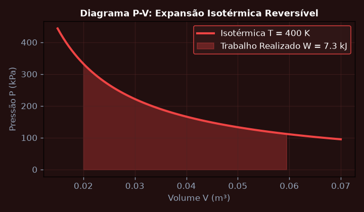
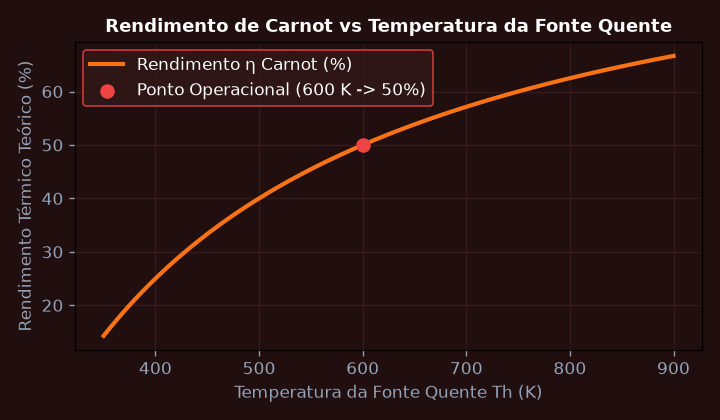
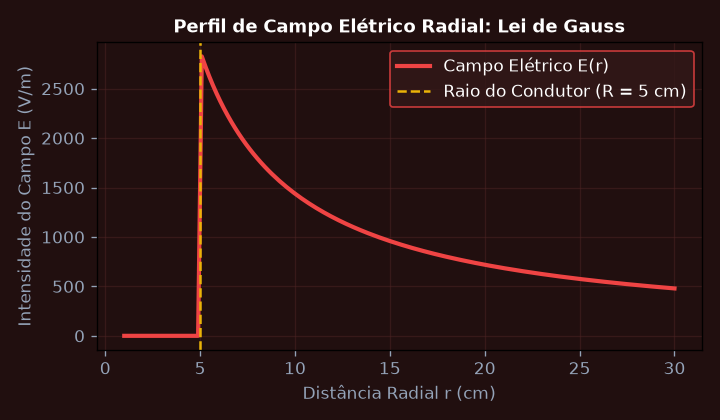
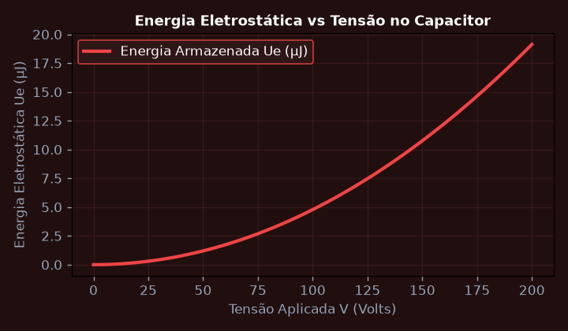
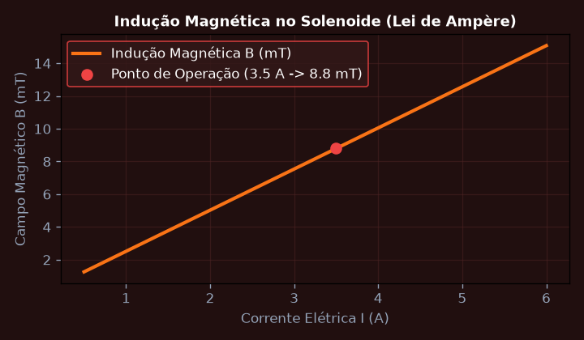
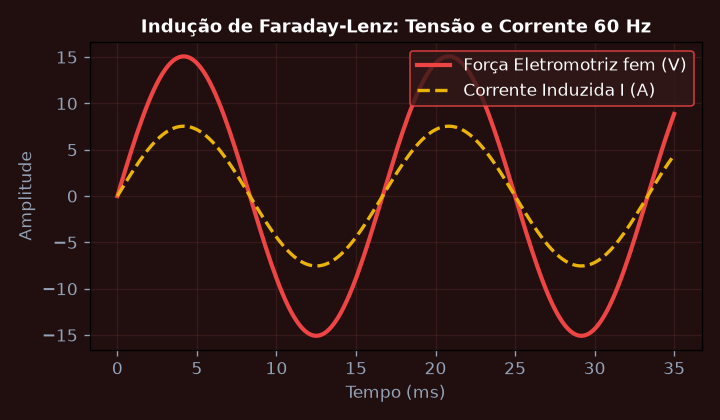

Primeira Lei da Termodinâmica e Processos Gasosos Ideais
Calcular a variação de energia interna Delta U, o calor trocado Q e o trabalho W realizado por 2 mols de gás ideal monoatômico em uma expansão isotérmica reversível de V_1 = 0.02 m^3 para V_2 = 0.06 m^3 a T = 400 K.
💎 Resolução Algébrica Passo a Passo (Padrão Symbolab)
Para um gás ideal em processo isotérmico reversível, a temperatura é estritamente constante (\Delta T = 0).
\Delta U = n C_v \Delta T = 0 \text{ Joules}.
W = \int_{V_1}^{V_2} P \, dV = \int_{V_1}^{V_2} \frac{nRT}{V} \, dV = nRT \ln\left(\frac{V_2}{V_1}\right).
W = 2 \times 8,314 \times 400 \times \ln(3) = 6651,2 \times 1,0986 \approx 7.307 \text{ Joules}.
Q = \Delta U + W = 0 + 7.307 = 7.307 \text{ Joules absorvidos da fonte térmica quente}.

Ciclo de Carnot e Limites de Eficiência da Segunda Lei
Determinar o rendimento térmico máximo, o trabalho líquido por ciclo e a taxa de produção de entropia de uma máquina térmica de Carnot operando entre as temperaturas T_q = 600 K e T_f = 300 K.
💎 Resolução Algébrica Passo a Passo (Padrão Symbolab)
\eta_{Carnot} = 1 - \frac{T_f}{T_q} = 1 - \frac{300}{600} = 0,50 \implies 50,0\%.
Se o calor absorvido da fonte quente for Q_q = 10.000 \text{ J}: Q_f = Q_q(1 - \eta) = 5.000 \text{ J}.
W_{líquido} = Q_q - Q_f = 10.000 - 5.000 = 5.000 \text{ J}.
\Delta S_{ciclo} = \frac{Q_q}{T_q} - \frac{Q_f}{T_f} = \frac{10.000}{600} - \frac{5.000}{300} = 16,67 - 16,67 = 0 \text{ J/K}.
Nenhuma máquina operando entre esses reservatórios pode superar 50% de rendimento sem violar o Teorema de Clausius.

Campo Elétrico e Aplicação da Lei de Gauss
Calcular a intensidade do campo elétrico E a uma distância r de um cilindro condutor infinitamente longo de raio R = 0.05 m carregado com densidade linear uniforme lambda = 8.0 nC/m.
💎 Resolução Algébrica Passo a Passo (Padrão Symbolab)
Adotar cilindro coaxial de raio r e comprimento L.
\Phi_E = \oint E \cdot dA = E(2\pi r L) nas paredes laterais, sendo o fluxo pelas tampas identicamente nulo.
q_{env} = \lambda L.
E(2\pi r L) = \frac{\lambda L}{\epsilon_0} \implies E(r) = \frac{\lambda}{2\pi \epsilon_0 r}.
E = \frac{8 \times 10^{-9}}{2\pi \times 8,854 \times 10^{-12} \times 0,10} \approx \frac{8 \times 10^{-9}}{5,563 \times 10^{-12}} = 1.438 \text{ N/C (ou V/m)}.

Potencial Elétrico, Superfícies Equipotenciais e Capacitância
Determinar a capacitância C e a energia eletrostática armazenada U_e em um capacitor de placas planas e paralelas de área A = 0.04 m^2 separadas por d = 2.0 mm com dielétrico mica (kappa = 5.4).
💎 Resolução Algébrica Passo a Passo (Padrão Symbolab)
C = \kappa \frac{\epsilon_0 A}{d} = 5,4 \times \frac{8,854 \times 10^{-12} \times 0,04}{0,002}.
C = \frac{1,9125 \times 10^{-12}}{0,002} \approx 956,2 \text{ pF}.
Q = C V = 956,2 \times 10^{-12} \times 100 = 95,62 \text{ nC}.
U_e = \frac{1}{2} C V^2 = \frac{1}{2} (956,2 \times 10^{-12}) (100)^2 = 4,781 \, \mu\text{J}.
O dielétrico multiplicou a densidade de energia por 5,4 vezes comparado ao vácuo sem risco de ruptura dielétrica.

Lei de Biot-Savart e Lei de Ampère no Cálculo de Campo Magnético
Calcular a indução magnética B no centro de uma bobina solenoide com N = 500 espiras, comprimento L = 0.25 m conduzindo uma corrente constante I = 3.5 A.
💎 Resolução Algébrica Passo a Passo (Padrão Symbolab)
Escolha de laço retangular amperiano interno ao solenoide.
n = \frac{N}{L} = \frac{500}{0,25} = 2.000 \text{ espiras/metro}.
B = \mu_0 n I, onde \mu_0 = 4\pi \times 10^{-7} \text{ T}\cdot\text{m/A}.
B = (4\pi \times 10^{-7}) \times 2.000 \times 3,5 = 2,8 \pi \times 10^{-3} \approx 8,796 \times 10^{-3} \text{ T} = 8,80 \text{ mT}.
O campo interno é homogêneo e linearmente proporcional à corrente de magnetização.

Indução Eletromagnética: Lei de Faraday-Lenz e Autoindutância
Calcular a força eletromotriz induzida fem (epsilon) e a corrente circulante em uma espira condutora de área A = 0.05 m^2 e resistência R = 2.0 ohms submetida a um campo magnético B(t) = 0.8 * cos(120*pi*t) Tesla.
💎 Resolução Algébrica Passo a Passo (Padrão Symbolab)
\Phi_B(t) = B(t) \cdot A = 0,05 \times 0,8 \cos(120\pi t) = 0,04 \cos(120\pi t) \text{ Wb}.
\mathcal{E}(t) = -\frac{d\Phi_B}{dt} = -0,04 (-120\pi) \sin(120\pi t) = 4,8\pi \sin(120\pi t) \text{ V}.
\mathcal{E}_{pico} = 4,8\pi \approx 15,08 \text{ Volts}.
I(t) = \frac{\mathcal{E}(t)}{R} = \frac{15,08}{2,0} \sin(120\pi t) = 7,54 \sin(120\pi t) \text{ A}.
A corrente cria um campo induzido que se opõe à variação do fluxo externo, validando a Lei de Lenz.
